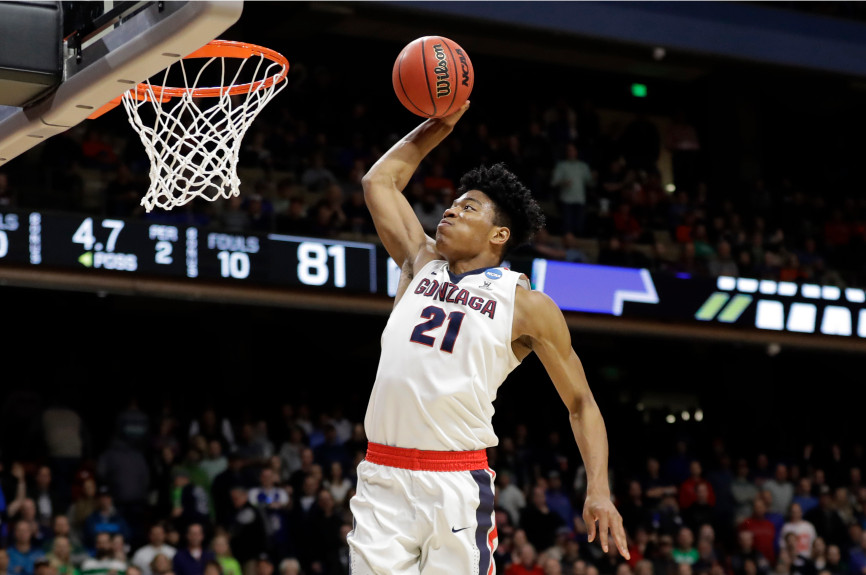

Imagine a wonderful gardener, Fred, who happens to live on a street that is a little rundown. Just because the rest of Fred's street isn't very pretty, doesn't mean Fred is a bad gardener. We should compare Fred's gardening skills against other top-notch gardens, not against his neighbors!
This is criticism that Gonzaga basketball fans are all too familiar with. Gonzaga has fielded one of the top teams in the country for the last several years, and has had a nationally competive team for decades. But because they play in the WCC conference (which is typically pretty weak competition), they are regularly dismissed by national media based on their "strength of schedule".
According to the nerdy statistics website FiveThirtyEight, these are the teams most likely to win-it-all in this year's NCAA tournament, and their probabilities:
The top three teams are separated by only a few percentage points of probability, yet 42% of ESPN brackets have Duke winning the national championship, while only 7% pick Gonzaga. Gonzaga even BEAT Duke during the regular season! Strength of schedule, strength of schmedule... Can't wait to see my Zags cutting down the nets in April :)
